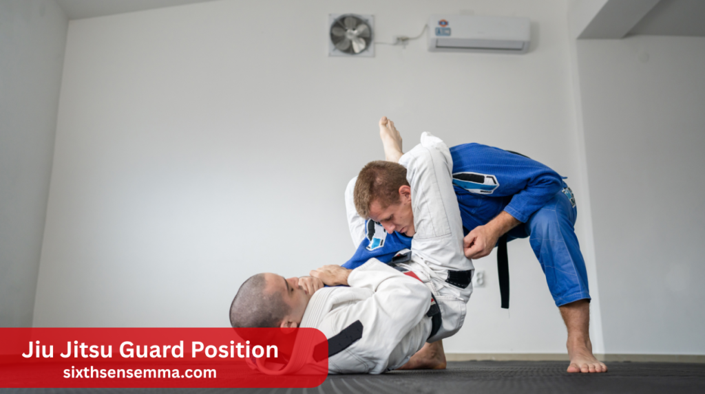
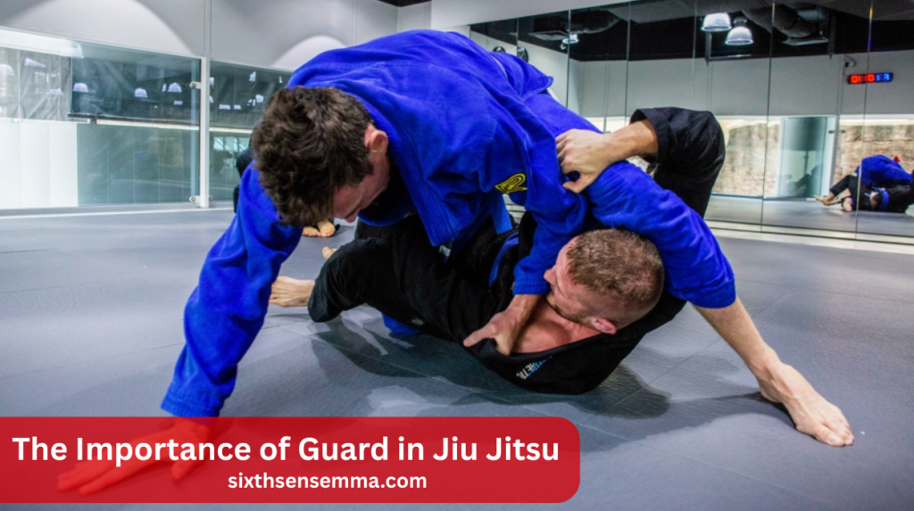
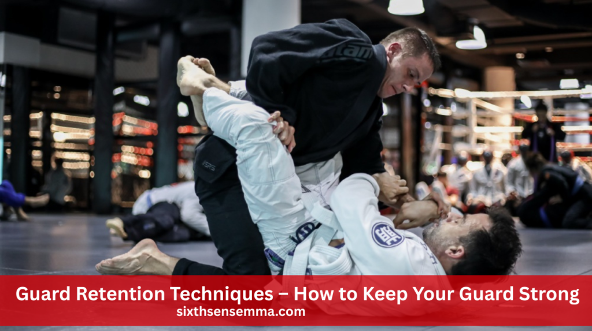
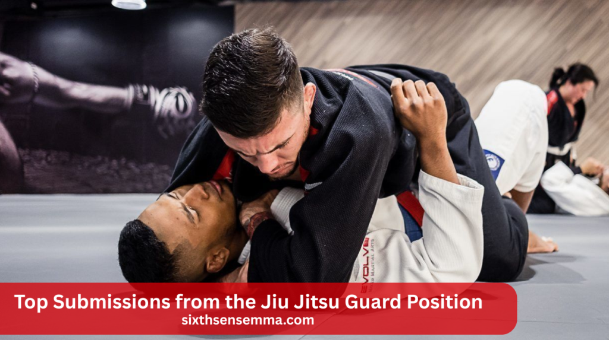

Jiu Jitsu Guard Position: Types, Tips & Key Techniques

Jiu Jitsu guard position is one of the most important parts of Brazilian Jiu Jitsu. Whether you’re on your back or seated, the guard helps you stay safe, control your opponent, and launch attacks. It’s the foundation of both gi and no-gi styles. Mastering the guard is key for defense, movement, and submissions in BJJ.
Why is the guard position important in Jiu Jitsu?
The guard position is important because it allows you to defend yourself while on your back, control your opponent’s movement, and set up sweeps or submissions. A strong guard can stop an opponent’s attack and even turn the fight in your favor.
The Importance of Guard in Jiu Jitsu

This section introduces what the guard position is and why it matters. It explains how the guard helps you stay safe, control your opponent, and attack from the bottom. Whether you’re training with a gi or in no-gi, understanding the guard is key to success in Jiu Jitsu.
What is the guard position in Jiu Jitsu?
The guard position in Jiu Jitsu means you’re on your back or sitting while using your legs to control your opponent. It keeps them from attacking you easily and opens chances to sweep or submit them.
Role of the guard in ground fighting
In ground fighting, the guard is a strong position from the bottom. It helps you slow down or stop your opponent’s moves while giving you chances to counter-attack or change positions.
How the guard helps in control, defense, and submission setups
The guard allows you to manage your opponent’s posture and movements. You can defend their passes, break their balance, and attack with submissions like the triangle choke or armbar.
Why the guard is foundational in both gi and no-gi BJJ
In both gi and no-gi training, the guard is a basic part of Jiu Jitsu Guard Position. Whether using grips on clothing or just body control, guard skills are key for defense, offense, and movement.
Why the Guard is the Foundation of BJJ
Discover why the guard is such an essential component of Brazilian Jiu Jitsu here. It compares the guard to top positions, shows how it works in self-defense, and explains why new students should start learning guard before other positions.
Guard vs top position who really has the advantage?
In BJJ, the top position gives you pressure and control from above, but the guard offers just as much power. A strong guard allows you to attack, sweep, or submit, even from your back. Many advanced players prefer the guard because it turns defense into offense with the right timing and technique.
Guard for self defense and control under pressure
When you’re on the bottom in a real fight, the guard keeps you safe. You can use your legs to block strikes, control distance, and stop your opponent from moving. From there, you can work to sweep, submit, or safely stand up. It’s a vital self-defense tool in BJJ and MMA alike.
Why beginners should master guard before learning advanced positions
Beginners often spend time on their back, so learning guard first builds a strong foundation. It teaches balance, timing, and how to stay safe while setting up attacks. Mastering guard helps students understand body movement and control, which are needed for more advanced sweeps, submissions, and positional escapes later on.
Also Read Our Article: Brazilian Jiu Jitsu Gi Basics: Types, Fit & Buying Tips
Overview of Jiu Jitsu Guard Position
This part gives a quick look at the most common types of guard in Jiu Jitsu. It explains the differences between closed and open guard and teaches when to switch between guard types during a roll or match.
Understanding basic guard types
Jiu Jitsu has many Jiu Jitsu Guard Position, but the most common are closed guard, open guard, half guard, and butterfly guard. Each one serves a different purpose. Some are better for control, while others focus on movement and attacks. Knowing the basic guards helps you flow better and adjust during rolls or matches.
Closed vs open guard – key differences
With a closed guard, your opponent’s movement is restricted and you maintain control by keeping your legs wrapped around their waist. Your legs can move freely with an open guard for improved angles and assaults. Closed guard is good for beginners learning control, while open guard adds more mobility and creativity as you progress in skill.
When and why to swap between guard types mid-roll
Switching between guards helps you stay safe and active when your opponent tries to pass. If your closed guard opens, you can move into open guard or half guard. Changing guard types allows you to respond better to pressure, set up sweeps, or transition into better positions during live rolling.
Closed Guard Classic Control and Attacks
Closed guard is one of the first positions students learn. This section covers how to stay strong in closed guard, what sweeps you can use, and how to attack with submissions like armbars and triangles from that position.
How to maintain closed guard posture and grips
Keep your hips off the mat and your legs locked around your opponent’s waist when you’re in closed guard. Use grips on their collar, sleeves, or wrists to limit their posture. To disrupt their balance and prepare attacks, keep your head off the mat, be active, and use your legs and grips.
Best sweeps from closed guard
From closed guard, you can use several high-percentage sweeps to gain top control. Your legs are used to push and pull during the scissor sweep. When your opponent bends forward, the hip bump sweep works really well. The flower sweep works by pulling their arm and tipping their balance to the side.
Easy and effective submissions from closed guard
Strong submissions like the triangle choke, which traps your opponent’s arm and neck, are available in closed guard. To isolate their elbow, the armbar moves their hips. Sweeps may result from the omoplata locking their shoulder. These submissions are effective even against bigger opponents when done with proper timing and setup.
Open Guard – Mobility and Grip Strategy
Open guard lets you move more freely and use different grips to control your opponent. You’ll learn how to use your legs, grips, and movement to keep your opponent away and create openings for sweeps or submissions.
Characteristics of open guard in BJJ
Open guard is flexible and allows you to use your legs and grips freely. It’s ideal for creating space, attacking with sweeps, and defending against guard passes. You can move side to side or invert to avoid pressure.To escape pressure, you can invert or slide side to side. This guard works well in both gi and no-gi Jiu Jitsu Guard Position styles.
Common open-guard grips include collars, sleeves, and pants.
In gi Jiu Jitsu Guard Position, open guard often uses grips on the collar, sleeve, and pants. These help control your opponent’s posture and movement. In no-gi, you’ll use grips on the wrists, ankles, or underhooks. Grips give you leverage and set up sweeps, submissions, or transitions to stronger positions.
How to move dynamically in open guard
To move well in open guard, keep your hips active and stay light on your back. Use your legs to hook, push, and pull while maintaining grips. Create angles to attack or recover when your opponent pressures in. Dynamic mobility makes it more difficult to get past your guard and keeps your opponent guessing.
Half Guard Balance of Defense and Offense
Half guard combines attack and defense. This part teaches how to stay safe in half guard, use underhooks for sweeps, and how to either recover full guard or transition into attacks like back takes.
Entering and maintaining half guard
Half guard is when one of your opponent’s legs is trapped between your own. To stay safe, stay on your side and use an underhook to stop them from flattening you. Lock your legs tightly and use your free hand to frame their head or shoulder, creating space and balance.
Best attacks and sweeps from half guard
Half guard is great for sweeping your opponent. Use the underhook to get underneath them and lift with your legs. When your opponent is pressing forward, the knee lever sweep is a powerful move. You can also threaten back takes or submissions when they overcommit or make balance mistakes.
Preventing passes and transitioning to full guard
To stop your opponent from passing, maintain your frames powerful and block the cross-face. If they pressure too hard, work your legs back to recover full guard. Half guard also allows you to shift into deep half or butterfly guard if needed. Staying active helps keep your guard alive.
Butterfly Guard Dynamic Sweeps and Control
Butterfly guard is a seated guard with hooks under your opponent’s legs. This section shows how to place your feet and use momentum for powerful sweeps. It’s especially useful in no-gi Jiu Jitsu Guard Position because it doesn’t rely on clothing grips.
Hook and foot placement for control
In butterfly guard, place the soles of your feet inside your opponent’s thighs and keep your knees wide. This gives you strong control and lets you lift or tilt your opponent. Proper hook placement helps you manage distance and makes your sweeps much easier to set up and finish effectively.
Most effective butterfly sweeps
Some of the best sweeps from butterfly guard include the classic butterfly sweep, where you lift and tilt your opponent sideways. The arm drag lets you take their back when they lean forward. The elevator sweep is perfect when you control both arms and lift them off balance with your hooks.
When and why to use butterfly guard (especially in no-gi)
Butterfly guard works great in seated Jiu Jitsu Guard Position, especially in no-gi where grips are limited. It allows quick movement and strong control without relying on sleeves or collars. Many no-gi fighters use butterfly guard to stay mobile, threaten sweeps, or create openings for submissions and back takes from a compact position.
Guard Retention Techniques – How to Keep Your Guard Strong

This section focuses on keeping your guard from being passed. You’ll learn how to use frames, grips, and hip movement to stop opponents from breaking through. It also teaches how to recover guard or escape to a safe position.
Importance of retention in live rolling and competition
The ability to keep opponents from getting past your defenses is known as guard retention. In rolling or competition, staying in guard means staying in the fight. If they pass, they score points and gain control. Good retention helps you defend better and gives you more chances to attack or sweep.
Using frames, legs, and grips to prevent passes
To keep your guard, use your arms and legs as frames to block their movement. Strong grips on sleeves, ankles, or wrists slow them down. Always stay active with your hooks and frames to redirect their pressure and create the space you need to reset or re-guard quickly.
Creating angles and maintaining distance
Stay off your back and move your hips often to create side angles. This makes your guard harder to pass and opens up new attacks. Keep your opponent at a safe distance by using your shins, arms, or grips to manage space. Angles also help you set up submissions and sweeps.
How to re-guard after a near-pass
If your guard breaks open, don’t give up. To recover, loop back using your hips and legs. Pull their leg into half guard, slide your shin across for butterfly, or regain closed guard. The goal is to block their advance and quickly get your legs between you and your opponent again.
Guard recovery vs transition to turtle or stand-up
Sometimes, you can’t recover guard. Change to turtle or technical stand-up in that scenario. Turtle helps you stay safe and avoid points in sport BJJ. Standing up resets the fight and may give you a better chance to attack or escape. Choose based on the situation and your opponent’s pressure.
Essential Guard Drills for Daily Practice
Here, you get drills to help improve your guard. These include solo hip drills, partner sweeps, and guard recovery exercises. Regular practice builds better timing, movement, and confidence when playing guard.
Solo hip movement drills for fluid guard work
Drills like shrimping and bridging help you develop strong hips and core control. These solo movements are key for guard retention, sweeps, and submissions. Practicing them every day makes your guard faster and smoother, helping you move with ease when rolling or reacting to your opponent’s pressure.
Partner drills for timing sweeps and submissions
Use a training partner to practice sweeps like scissor or butterfly repeatedly. Drill submissions like armbars or triangles with light resistance to build timing. These partner drills help you feel how your opponent moves and how to react. They also teach you how to chain techniques together smoothly.
Solo guard recovery drills for retention and mobility
Practice technical stand-ups, granby rolls, and knee shield movements to improve your ability to recover guard. These solo drills build flexibility and timing, helping you escape tough spots. Consistent practice helps you stay mobile on your back and ready to re-engage with guard before your opponent fully passes.
Also Read Our Article: Top Mixed Martial Arts Brands for Gear & Apparel
Guard in MMA vs BJJ Key Differences
Guard works differently in MMA because of punches. This section explains how to protect yourself, how gloves change your grips, and how to use the guard to escape or get back to your feet in a fight.
The danger of strikes from the bottom position
In MMA, the guard can be dangerous because your opponent can punch or elbow you. You must protect your face at all times and avoid staying still. That’s why guard in MMA is often used briefly—just long enough to sweep, stand up, or trap an arm for a quick submission.
How MMA gloves affect grip strategies
MMA gloves are bulky and limit your ability to grip cloth or wrists tightly. Instead of sleeve grips, you use underhooks, overhooks, or strong leg positioning. These grips help you control your opponent’s posture without relying on the gi. You must be faster and more precise in your control strategies.
Using the guard in MMA to stand up, escape, or control
In MMA, you usually don’t want to stay on your back too long. Guard is used to protect yourself, create space, and either stand up or sweep. If you can control their posture, you can land elbows, look for a submission, or quickly escape to get back to your feet.
Pro Tips to Level Up Your Guard Game
This part shares smart training tips to improve your guard over time. It includes advice like drilling regularly, tracking your progress, and practicing under real pressure to build confidence and skill.
Train your guard under pressure (live sparring)
Don’t only drill your guard in slow sessions test it in live rolls. Facing real resistance helps you learn what works under pressure. This improves your timing, instincts, and comfort when someone is actively trying to pass. Rolling with different partners helps you learn to adapt your guard to various styles.
Focus on guard retention before submissions
You can’t submit someone if your guard keeps getting passed. Learn how to stay in Jiu Jitsu Guard Position and stay safe first. Once you’re confident in your retention, then start setting up sweeps or submissions. Strong fundamentals give you the base you need to build higher-level attacks and transitions.
Incorporate guard drills before and after each class
Doing a few guard drills at the start and end of class builds strong habits. Focus on movements like shrimping, scissor sweeps, or triangle setups. These small sessions add up and improve your game over time. Repetition is the key to building smooth, instinctive guard reactions.
Track your guard success and failures with a journal
After training, write down what worked in your guard and what didn’t. Note which guards felt solid and which Jiu Jitsu Guard Position led to getting passed. Reviewing your notes helps you spot patterns and plan your next drills. It’s a powerful tool to track progress and grow your Jiu Jitsu Guard Position game smarter.
How and When to Transition from Guard to Top Control
Learn how to turn defense into offense. This section explains when to sweep, how to read your opponent’s movements, and how to transition smoothly into top Jiu Jitsu Guard Position like mount or back control.
Recognizing the right moment for a sweep or reversal
The best time to sweep is when your opponent’s balance breaks. Watch for them leaning too far or posting an arm. When they shift weight or lose posture, that’s your chance. React quickly with your sweep and follow through to secure top control or even a dominant submission Jiu Jitsu Guard Position.
Reading your opponent’s posture and pressure
Pay close attention to your opponent’s body. If they’re pushing forward too hard or pulling back, you can use their force against them. Reading pressure helps you choose the right sweep or movement. Guard becomes more effective when you learn to feel and time your transitions with precision.
Creating opportunities to take mount or back control
You can reach the rear or the mount directly with some sweeps, such as the arm drag or flower sweep. These are dominant Jiu Jitsu Guard Position where you can submit or control your opponent easily. Aim to use your guard not just to get on top, but to land in a strong finishing spot.
Top Submissions from the Jiu Jitsu Guard Position

This section breaks down popular submissions you can hit from the guard. It includes the triangle choke, armbar, and omoplata. You’ll learn what each move targets and when to apply them effectively.
Triangle choke basics and setups
The triangle choke uses your legs to trap your opponent’s neck and one arm. Set it up when they reach too far or leave an arm inside your guard. Angle your hips, lock your legs, and squeeze. It’s one of the most powerful submissions from both closed and open guard.
Armbar from closed and open guard
The armbar works great when your opponent posts their hand or tries to pass. You trap their arm, swing your leg over their head, and apply pressure at the elbow. From closed guard, it’s a smooth setup. From open guard, it often follows a failed sweep or grip break.
Omoplata and other shoulder lock options
The omoplata uses your leg to trap your opponent’s shoulder and twist their arm. It’s a slow, tight submission and works best when they posture up or defend another attack. You can also use it to sweep if they resist the tap. It’s a great tool for control and attack.
Common Mistakes While Playing Guard
Avoid the common errors that can make your guard weak. This section points out habits like staying flat, skipping grips, and rushing submissions. Fixing these mistakes helps keep your guard sharp and dangerous.
Losing hip mobility and remaining flat on one’s back
A flat back limits your movement and makes guard passes easier. Always keep your hips off the mat and stay on your side or at an angle. This helps you react quickly, recover guard, and create space. Active hips are key to staying mobile and setting up sweeps or submissions.
Holding guard without proper grips or control
Just wrapping your legs around your opponent isn’t enough. Without solid grips on sleeves, wrists, or ankles, they’ll easily posture up or pass. Use your hands and feet together to manage their movement. Good grips allow you to control their balance and open chances for sweeps or submissions.
Failing to use hip movement and angle creation
Staying in a straight line makes attacks harder. Use hip movement to shift your body and create angles. Angles help you isolate limbs, lock in submissions, or off-balance your opponent for sweeps. The more you move, the harder it is for them to control or pass your guard.
Chasing submissions without first establishing control
Jumping into submissions without control is risky. You may lose Jiu Jitsu Guard Position and end up in a bad spot. Prioritize off-balancing your opponent, breaking stance, and holding onto your grips. Once you have solid control, then go for the finish. A good submission starts with great guard control and patience.
Conclusion
Jiu Jitsu Guard Position are a key part of Jiu Jitsu, whether you’re a beginner or more advanced. They help you control your opponent, protect yourself, and set up attacks. From closed guard to butterfly, each type has its own purpose. You may improve your ground game with consistent work, timing, and effective guard retention. Mastering Jiu Jitsu Guard Position is an essential step in your Jiu Jitsu Guard Position journey.
FAQ's
Z guard is a half guard variation where one leg is across the opponent’s body like a “Z” shape. It helps control distance and create space. This guard is great for sweeps and submissions. It's often used to slow down pressure from the top.
There are many guard types in Jiu-Jitsu, including closed, open, half, butterfly, spider, and more. Each has unique strategies and setups. Some guards are defensive, while others are aggressive. New variations keep developing as the sport evolves.
The lowest rank in Brazilian Jiu-Jitsu is the white belt. This is where all beginners start their journey. It focuses on learning basic positions and techniques. Progression depends on training, skill, and dedication.
Butterfly guard involves sitting up with your feet hooked inside the opponent's thighs. It gives control and mobility for sweeps. It’s great for breaking posture and setting up submissions. Timing and leverage are key to using it well.
K guard is a modern open guard used to attack the legs. One leg is placed across the opponent's body while the other hooks behind the knee. It’s commonly used for leg lock entries. It works best when your opponent is standing or kneeling.
Full guard, also called closed guard, is when you're on your back with your legs locked around your opponent's waist. It gives control from the bottom. You can attack with submissions or sweep from here. It’s a foundational guard in BJJ.
De La Riva guard is an open guard used mostly in gi grappling. One leg hooks around the outside of the opponent’s leg. It helps with off-balancing and sweeping. It’s named after Ricardo De La Riva, who popularized it.
Spider guard is used in gi Jiu-Jitsu, where you grip the sleeves and use your feet on the opponent’s arms. It creates strong distance control. It's great for sweeps and submissions. Flexibility and timing are important for this guard.
Omoplata is a shoulder lock submission using your legs. It’s often set up from Jiu Jitsu Guard Position like closed or spider. It traps the opponent’s arm and forces them to tap. It also allows sweeps and transitions if they defend.
Lasso guard uses your leg wrapped around the opponent’s arm while grip their sleeve. It controls posture and breaks grips. Great for slowing down aggressive opponents. It opens paths to sweeps, triangles, and omoplatas.
Train with us in Coppell
The first class is free. Shorts, a t-shirt and a water bottle. We lend the rest.
Book a free class